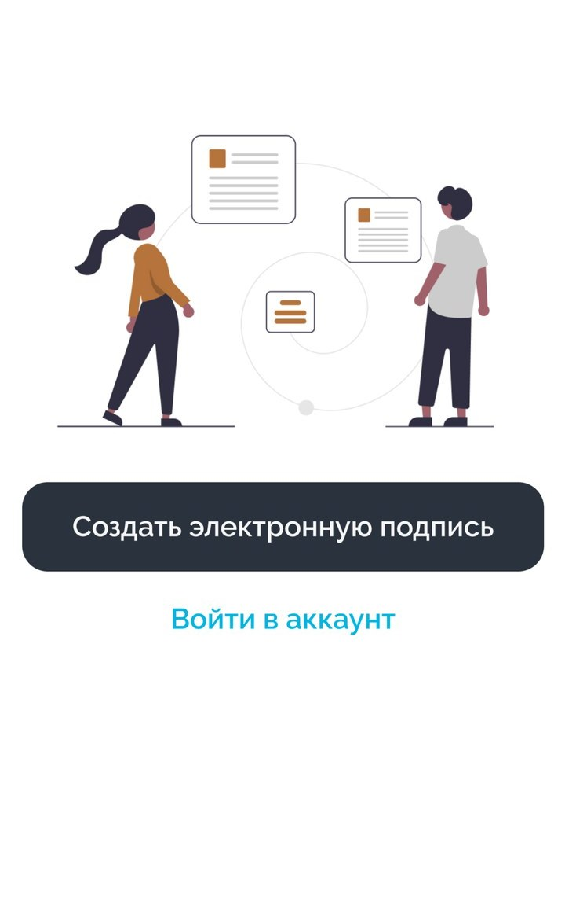
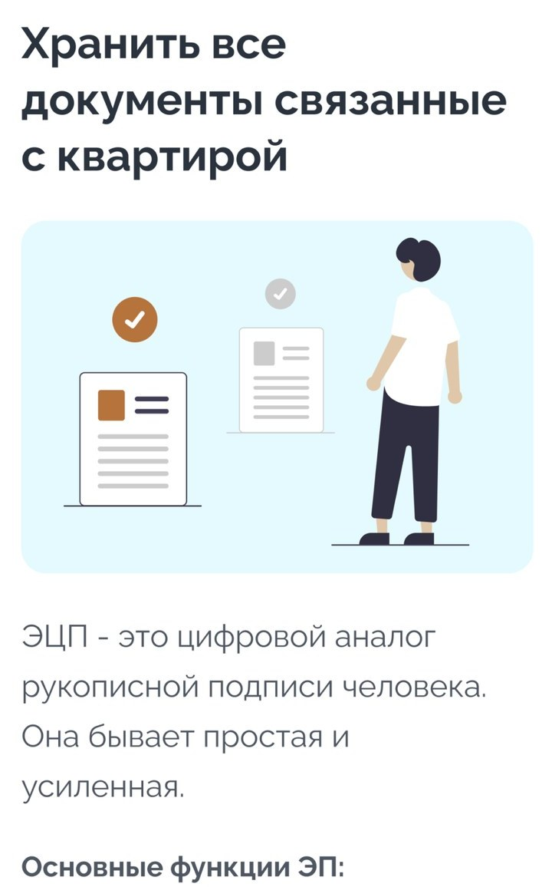

ProfiSupport — koʻchmas mulk bitimlari uchun elektron imzo va hujjatlar ilovasi. Oʻzbek kompaniyasi xizmati.
Ilovada koʻrish uchun bosqichni bosing.
Bank, quruvchi yoki agentlik paketni yuboradi — bildirishnoma keladi va muddat koʻrinadi.
Elektron imzo ilovaning oʻzida faollashtiriladi. Ofisga borish shart emas.
Imzolangan hujjatlar roʻyxatdan oʻtkazishga ketadi; har bir bosqich ilovada koʻrinadi.
Haqiqiy ekranlar: elektron imzo chiqarish va kvartira boʻyicha hujjatlar ombori.


"PROFI SUPPORT" MCHJ — Oʻzbekiston Respublikasida roʻyxatdan oʻtgan kompaniya. U koʻchmas mulk bitimlarini elektron roʻyxatdan oʻtkazish uchun ProfiSupport xizmatini ishlab chiqadi va qoʻllab-quvvatlaydi.
Xizmat haqidagi savollar, hamkorlik va maʼlumotlar boʻyicha soʻrovlarga ish kunlari javob beramiz.